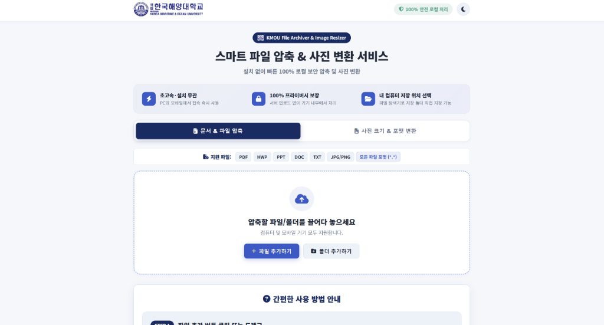
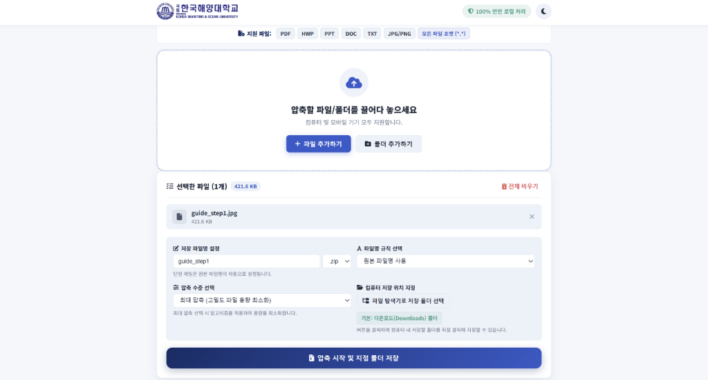
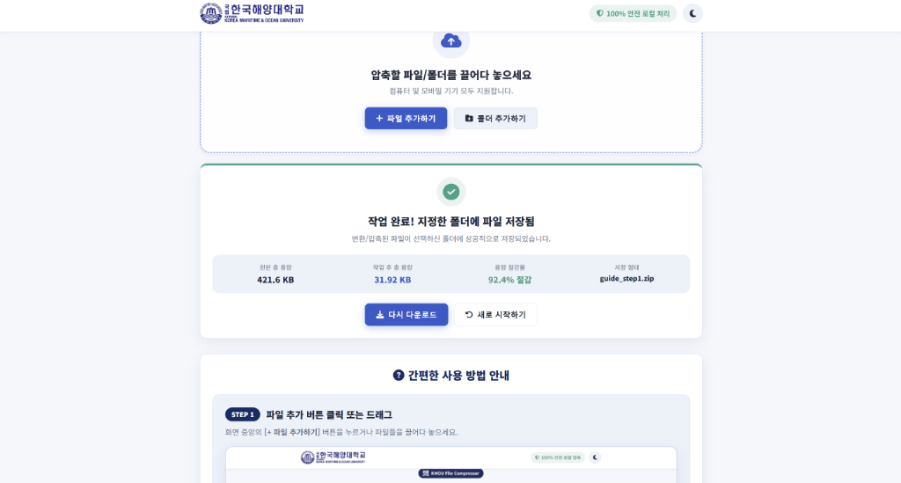

PDF
HWP
PPT
DOC
TXT
JPG/PNG
모든 파일 포맷 (*.*)
압축할 파일/폴더를 끌어다 놓으세요
컴퓨터 및 모바일 기기 모두 지원합니다.
간편한 사용 방법 안내
STEP 1
파일 추가 버튼 클릭 또는 드래그
화면 중앙의 [+ 파일 추가하기] 버튼을 누르거나 파일들을 끌어다 놓으세요.

① 파일 추가 클릭
STEP 2
옵션 설정 및 압축 시작 클릭
파일 목록 아래의 세부 옵션을 설정한 후 [압축 시작 및 지정 폴더 저장] 버튼을 클릭합니다.
세부 옵션 설정 방법 가이드:
- 📝 파일명 설정: 저장할 압축 파일의 이름을 입력창에 직접 수정하거나 기본 자동 생성 이름을 사용할 수 있습니다.
- ⚡ 압축 수준 선택: [표준 압축](빠르고 안정적) 및 [최대 압축](고밀도 알고리즘 적용으로 파일 용량 최소화) 중 선택합니다.
- 📂 저장 위치 지정: [저장 폴더 선택] 버튼을 클릭하면 컴퓨터 내 파일 탐색기가 열려 원하는 저장 폴더를 클릭해 직접 지정할 수 있습니다.

② 압축 시작 클릭
STEP 3
자동 저장 확인 및 압축 완료
진행률 100% 달성 시 파일이 내 컴퓨터/모바일 단말기로 자동 저장됩니다.

③ 저장 완료